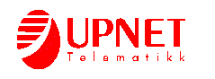
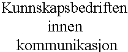

UPNET Telematikk er Norges ledende leverandør av nettverk- og datakommunikasjons-løsninger. Vi har en betydelig kundebase innenfor offentlig og privat virksomhet. Blant våre kunder kan nevnes; Telenor, Statoil, Elkem, Phillips Petroleum, Nycomed, Forvaltningstjenesten og Gjensidige.Våre viktigste leverandører er Bay Networks og Cisco Systems.
For å styrke vår posisjon i markedet ytterligere, søker vi etter
Produktansvarlig - Cisco
Dine oppgaver vil være:Totalansvar for Ciscos produktportefølje
Salgsstøtte i forbindelse med utarbeidelse av tilbud
Presentasjoner for kunder
Design av nettverk
Tett kontakt med Ciscos produkt- og markedsfunksjoner
Prislister, brosjyrer, informasjonsmatriell
Promotering av Cisco, herunder være med på å arrangere seminarer, planlegge markedsaktiviteter.
Du bør ha utdannelse innenfor datakommunikasjon og inngående kjennskap til ruterbaserte nettverksløsninger, gjerne med kjennskap til Ciscos produktfamilie. Du skal kunne videreformidle dine kunnskaper til våre selgere og kunder.
Vi kan tilby deg en utfordrende jobb, der du får mulighet til å arbeide med verdens ledende produkt innenfor nettverk. Vi vil sørge for at du får en meget god opplæring både hos oss og hos Cisco sentralt. Dine betingelser vil være gode.
Er dette interessant, send en kortfattet søknad med CV til Per Brose på:
UPNET Telematikk er Norges ledende leverandør innen integrerte kommunikasjonsløsninger. Vi representerer flere av verdens ledende produsenter av utstyr for svitsjing, ruting, multipleksing, spredenett m.m. Vi inngår i Upnet-gruppen. Vi forbedrer ditt resultat.
Industriveien 33, Postboks 349, 1301 Sandvika
Telefon: 6756 7300, Telefax 6756 5960
X.400: S=firmapost;P=upnet;A=telemax;C=no
Internet: firmapost@upnet.telemax.no